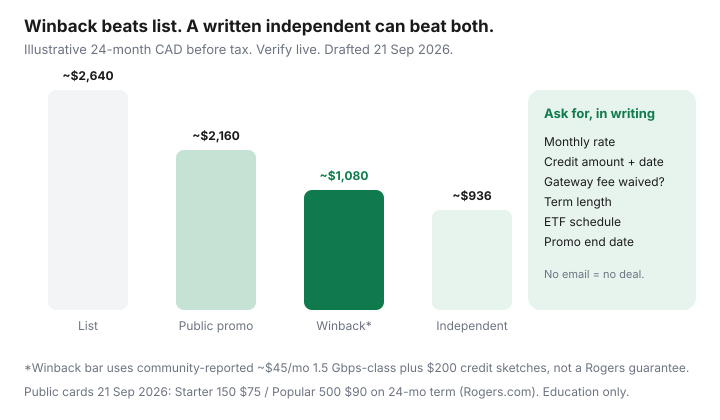

Internet · Canada
How to Run a Rogers Internet Winback Call Without Leaving Money on the Table
Rogers (and Shaw-legacy) internet bills in Canada do not “creep.” They cliff. A promotional rate or time-limited credit ends, the public card’s regular price shows up, and a $20–$40+ jump looks like weather. It is not. It is a retail calendar, and the people who keep the lower number usually have a competing quote in writing and a cancellation date on file.
This is a Canadian retention playbook — RedFlagDeals and r/Rogers patterns, plus the CRTC Internet Code — not a U.S. Comcast script. Pair it with the three-quote method. If the honest 24-month independent wins, take it. Education only; Rogers can change desks, credits, and term language overnight.
Disclosure: Saving Optimizer has no Rogers partnership and does not earn a commission when you stay or leave. We do not invent search volumes or secret “employee codes.” Modem, router, and mesh mentions in this hub are offer types only. This is not legal advice or a guarantee that winback will call.
Key takeaways
- Public Rogers cards on 21 Sep 2026 showed Starter 150 $75, Popular 500 $90, and Premier 2 Gig $100 on 24-month terms with Auto-Pay — and much higher without the time-limited savings. Winback numbers in community threads are often lower. Verify live.
- Gather TekSavvy, Oxio, and Bell (or Telus) quotes at the address before you dial. No BATNA, no leverage.
- On Rogers, a future-dated cancellation is the community path that more often reaches winback/ambassador rather than a weak front-line “retention” offer. Confirm what you actually filed.
- Ask for five things in one email: monthly rate, credits, gateway fee, term, ETF schedule plus the date the rate changes.
- Walk when an independent or fibre alternative beats a mushy $10-off. Calendar the next cliff the same day.
Why promo rates expire and what list pricing really means
Rogers’ public plan page (used 21 Sep 2026) prints two prices: the 24-month term price with time-limited savings and a $5 Auto-Pay discount, and a higher “without” price. Example: Popular 500 at $90 versus $130; Starter 150 at $75 versus $110; Premier 2 Gig at $100 versus $160. Online-only extras the same day included a waived $29 shipping mention and a $100 one-time bill credit — those rotate. None of that is a winback.
List or “regular” is what the billing system can return to when a credit or term saving ends. Households who never call often pay that number for a year. Households who call without a competing quote often accept $10 off and a shorter credit. The gap is the whole article.
Gather competing quotes (TekSavvy, Oxio, Bell) before you dial
Same-day address checks:
- TekSavvy — cable/fibre/DSL depending on plant; Ontario Cable 100 was publicly compared at $38.95 then $74.95 after 12 months (Topicks.ca, 11 Sep 2026). Confirm at teksavvy.com.
- Oxio — flat no-term rate, equipment included, 60-day guarantee where they serve (ON/QC and western Rogers plant per 2026 comparisons). Confirm at oxio.ca.
- Bell Fibe (or Telus PureFibre in the West) — uploads may justify a higher monthly even if Rogers download Mbps looks similar.
- Any flanker that actually qualifies (Fizz is Québec Videotron plant, not a Rogers Ontario lever).
Write one 24-month total for each. That number is what you read to the agent. “I saw $45 on Reddit” is not a quote.

Retention vs cancellation: which path unlocks the better offer
Two desks show up in Canadian threads:
- Front-line / loyalty / “retentions.” You call to complain the bill went up. You often get a short credit or a modest rate. Useful if you cannot risk a disconnect date.
- Winback / ambassador. RFD’s long Rogers thread still describes a pattern: file a future-dated cancellation (end of cycle or a date you can live with), wait for the outbound call, or call the number in the OP once the cancel is on the account. Offers in 2025–2026 threads have included sketches such as 500 Mbps around $35 plus a $200 credit, or 1.5 Gbps around $40–$45 plus $200–$300, usually on a two-year term. Those are self-reports, they vary by province (Ontario often richer than Alberta/B.C.), and they get worse as CRTC fee rules and campaign calendars shift. Treat them as a ceiling you might hear, not a script you demand.
If you cannot afford a gap in service, pick a cancel date after your next billing cycle and do not return the gateway until you have the confirmation email or you have actually switched. If the independent install is booked, the cancel date should match it.
What to ask for: monthly rate, bill credits, modem fee waiver, term length
Say it as a list. Pause after each line.
- Monthly rate for the speed you actually need — not a free upgrade to 2 gig you will not use.
- Bill credits — dollar amount, number of months, and which bill they hit. A $200 credit over four months is not $200 off month one forever.
- Gateway / modem line. Community bills still show a ~$10 gateway fee, sometimes offset by an equal credit, sometimes waived on a term. Ask whether the quoted monthly is all-in for equipment.
- Term. 12 vs 24 vs month-to-month. A gorgeous monthly on a 24-month ETF is a different product than Oxio’s no-term flat rate.
- Price-increase language. Some 2026 community notes distinguish a “guaranteed discount” from a guaranteed dollar price. Ask whether the $X can rise during the term.
- Upload speed on the exact plan, in writing. Cable 1.5 Gbps down with ~30–50 Mbps up is not Bell fibre.
Document the offer: confirmation email, promo end date, ETF if any
The Internet Code (for large facilities-based ISPs, including Rogers) requires clear prices, including during and after a promotion, and the total ETF plus how it declines. You still have to ask, because a phone recap will evaporate.
- Refuse to “just take the offer” until a confirmation email or in-app contract shows rate, credits, term, equipment, and ETF.
- If the permanent contract does not match what you agreed, the Code gives a 45-day window to cancel without ETF when the written contract conflicts or was not delivered on time.
- Photograph the Critical Information Summary. Note the trial period if an ETF applies (minimum 15 days, 30 if you self-identify as a person with a disability; usage limits apply; equipment back in near-new condition).
- Save the promo end date and the ETF dollars-per-remaining-month in the same calendar event.
RFD posters have described remaining-month ETF sketches that moved over time (older $15/month caps versus later higher remaining-month figures). Do not memorize a forum number. Read your schedule. After 12 June 2026, a no-tech activation fee on the same call is the sort of charge CCTS says is generally not allowed — dispute that separately from a lawful term ETF.
When to walk: independents and fibre alternatives that beat a weak winback
Walk when:
- 24-month CAD on TekSavvy or Oxio (or Fizz in Québec, or a regional independent) is lower and you accept the support model.
- Bell or Telus fibre uploads matter for work and Rogers will not put fibre at the suite.
- The “winback” is a six-month $10 credit that leaves you on $110+ afterward.
- They will not email the terms.
Stay when the written Rogers number beats the independent on 24-month CAD, you need the gateway/TV stack you already understand, or the fibre alternative is not actually at the address. Pride is not a plan.
Calendar the next promo cliff so you are not surprised again
The day the email lands: set a reminder 45 days before the promo or term saving ends. Rerun three quotes. File another future-dated cancel if you are staying in the Rogers ecosystem. If you left, do not assume the independent credit lasts forever — TekSavvy-style 12-month credits need the same alarm.
Re-shop is a household chore, like insurance. Autopay is how list price wins.
Sources & date stamps
- Rogers.com/internet/plans — public term prices and “without savings” figures; online credit/shipping notes (used 21 Sep 2026).
- RedFlagDeals, Rogers cable retentions megathread (785331) and winback report threads — future-dated cancel pattern; self-reported $35–$45 plus credit sketches; gateway-fee discussion. Not official offers.
- r/Rogers and r/PersonalFinanceCanada — gateway line items; wireless-vs-internet ETF confusion.
- CRTC Internet Code — promotional price disclosure, 45-day contract-mismatch cancel, trial period, ETF declining to $0 by 24 months on internet terms.
- CRTC 2026-43 and CCTS fee page (2 Sep 2026) — activation-fee ban vs remaining internet ETFs.
Frequently asked questions
Should I cancel before I have a competing quote?
No. Pull TekSavvy, Oxio, Bell, and any fibre quote at the address first. A winback team is more useful when you can name a 24-month number you will actually take.
Is winback better than calling regular retention?
On Rogers, RedFlagDeals regulars often report that a future-dated cancellation (or the dedicated winback/ambassador path) beats a front-line “loyalty” chat. Treat that as a community pattern, not a policy. Ask which desk you are on and get the offer in email.
Will I owe an early cancellation fee if I take a 24-month winback?
Possibly. CRTC 2026-43 banned most activation and plan-change fees from 12 June 2026, and banned wireless ETFs when there is no phone subsidy. Home internet term ETFs can still apply if they are in the contract and decline to $0 by 24 months. Read the schedule before you sign.
What if the winback is worse than TekSavvy or Oxio?
Walk. The point of the call is not to stay with Rogers. It is to see whether Rogers will beat your BATNA on 24-month CAD, uploads, and support you can live with.
How do I stop the next promo cliff?
Calendar the promo end date the day the confirmation email arrives, then re-shop 30–45 days out. List price is optional.